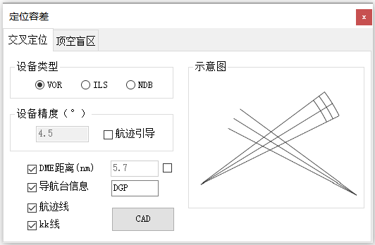

功能简介
【定位容差】用于绘制定位点容差区（Tolerance）。窗口分为“交叉定位”和“顶空盲区”两类计算，按导航设备类型、设备精度与飞行高度生成对应的容差区。
界面预览

界面元素
| 选项卡 / 控件 | 说明 |
|---|---|
| 交叉定位（选项卡） | 由两个方位 / 距离交叉确定定位点的容差区。 |
| 顶空盲区（选项卡） | 导航台正上方盲区（顶空盲区）范围计算。 |
| 设备类型 / 设备精度（°） | 选择导航设备类型并设置其精度。 |
| DME距离(nm) / 指定距离 | 使用DME设备，可指定DME距离。 |
| 航迹引导 / 航迹线 / kk线 / 航迹容差 | 控制绘制内容的复选框。 |
| CAD（按钮） | 绘制到CAD窗口中。 |
操作步骤
- 命令行输入
Y03_定位容差打开窗口。 - 切换到“交叉定位”或“顶空盲区”选项卡。
- 选择设备类型、填写设备精度、选中 DME 设备、可指定距离。
- 勾选需要绘制的内容（航迹线、kk 线、航迹容差等）。
- 点击【CAD】绘制容差区。
提示：不同设备类型（VOR / NDB / DME 等）对应不同的精度取值，直接影响容差区大小。